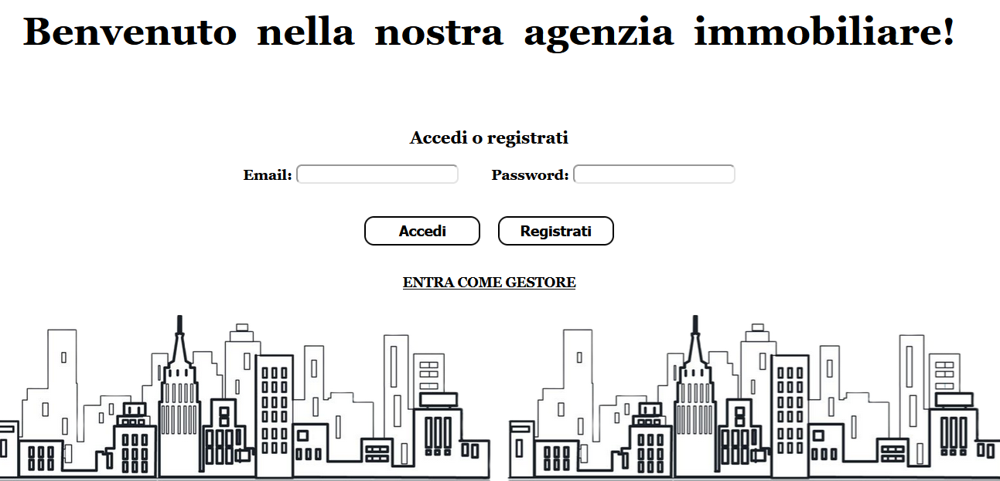
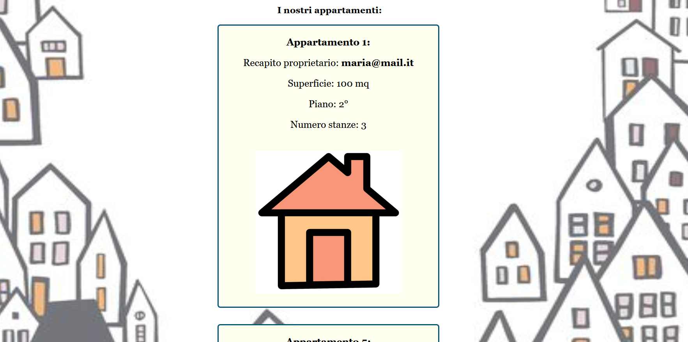
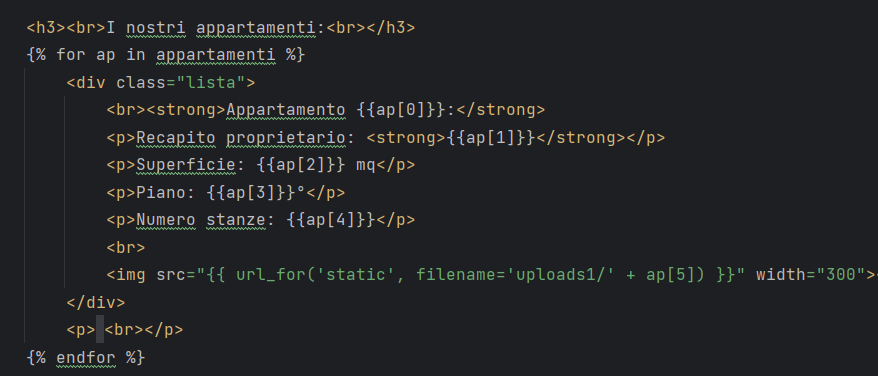
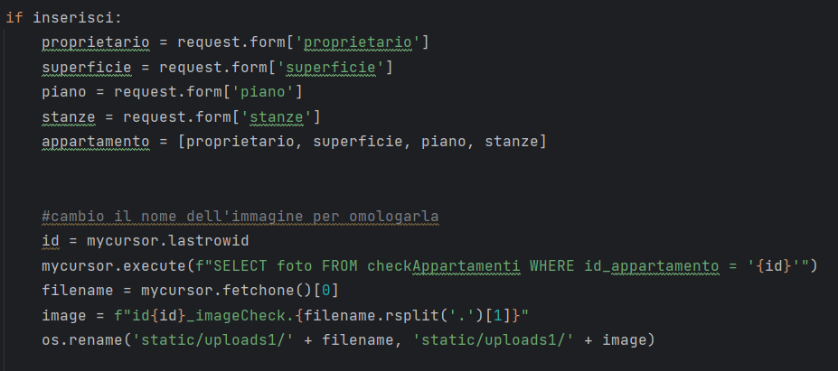
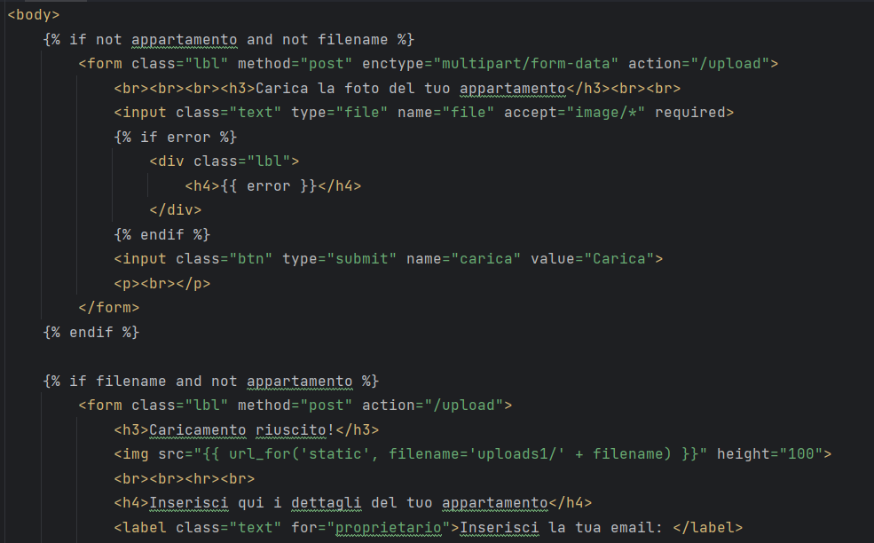
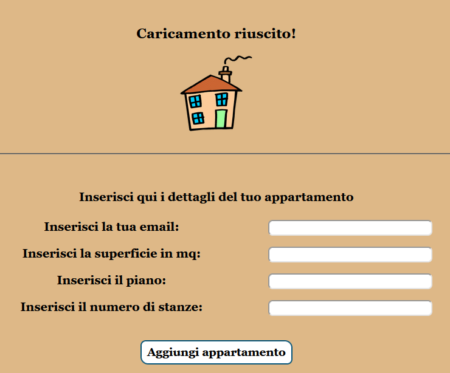
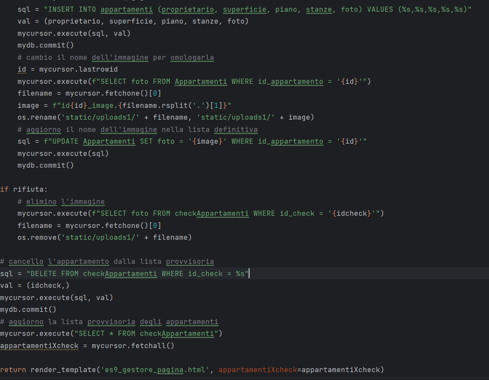

Il progetto gestisce il sito di un'agenzia immobiliare.
Fa uso di database MySQL per il
salvataggio dei dati degli appartamenti e delle librerie OS e Werkzeug per la gestione dei files immagine
caricati dagli utenti.

Il cliente, dopo essersi loggato o registrato nella home, può consultare l'elenco delle
case in vendita con le relative foto.
Cliccando sull'apposito pulsante può inserire un proprio annuncio di vendita inserendo una foto e compilando
un form con recapito e dati della casa, che saranno poi salvati in una tabella provvisoria MySQL ed inviati
alla pagina gestore in attesa di essere pubblicati.


L'immagine viene resa sicura e salvata in una cartella locale rinominandola con un nome univoco,
identificato tramite l'ID della tabella.
Nella tabella MySQL verrà salvato il nome del file.

La pagina HTML di inserimento annuncio è strutturata in tre sezioni tramite una
sequenza di codizioni:
La prima istanza visualizza il form di caricamento dell'immagine.
Se non ci sono errori (per i quali
verrebbero passati e stampati dei messaggi di avviso) viene visualizzata la schermata di conferma caricamento
e compare il form per l'inserimento degli altri dati.
Infine viene inviata la conferma di inserimento che visualizza l'immagine ed i dati caricati.


Il gestore può decidere di pubblicare o rifiutare l'annuncio.
Se l'annuncio viene rifiutato, l'immagine viene cancellata dalla cartella locale e la riga cancellata dal
database.
Se l'annuncio viene pubblicato, l'intera riga (escluso l'ID che seguirà la nuova numerazione) viene passata
nella tabella definitiva.
L'immagine viene rinominata secondo il nuovo ID.
